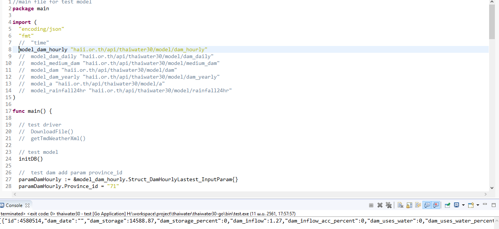

service เขื่อนเพิ่มเงื่อนไขรหัสภาค,รหัสจังหวัด
http://api2.thaiwater.net:9200/api/v1/thaiwater30/analyst/dam
- ดูในไฟล์ line 110
haii.or.th\api\thaiwater30\main.go

- ไฟล์ในข้อ 1 link ไปที่
haii.or.th\api\thaiwater30\service\frontend\analyst\main.go

- ไฟล์ในข้อ 2 link ไปที่
haii.or.th\api\thaiwater30\service\frontend\analyst\dam.go
line 222 function getDam()
p := &Struct_Dam_Inputparam{} paramDamHourly := &model_dam_hourly.Struct_DamHourlyLastest_InputParam{} paramDamHourly.Basin_id = p.BasinID paramDamHourly.Dam_date = p.DamDate resultDamHourly, err := model_dam_hourly.GetDamHourlyLastest(paramDamHourly)
เพิ่ม paramter ที่ต้องการให้เป็นเงื่อนไข ProvinceID,RegionID
type Struct_Dam_Inputparam struct { DamDate string `json:"dam_date"` // required:false example:`2006-01-02` วันที่ ไม่ใส่ = วันปัจจุบัน DamType int `json:"dam_size"` // required:false enum:[1,2] example:`1` ขนาดของเขื่อน ไม่ใส่ = ทุกขนาด, 1 = ขนาดใหญ่, 2 = ขนาดกลาง BasinID string `json:"basin_id"` // required:false example:`1` รหัสลุ่มน้ำ ไม่ใส่ = ทุกลุ่มน้ำ เลือกได้หลายลุ่มน้ำ เช่น 1,2,4 ProvinceID string `json:"province_id"` // required:false example:`10` รหัสจังหวัด ไม่ใส่ = ทุกจังหวัด เลือกได้หลายจังหวัด เช่น 10,51,62 RegionID string `json:"region_id"` // required:false example:`1` รหัสภาค ไม่ใส่ = ทุกภาค เลือกได้ทีละภาค // ไม่จำเป็นต้องใช้เงื่อนไขนี้ เมื่อเลือกเขื่อนขนาดใหญ่ หน้าแสดงผล มี เขื่อนรายชั่วดมงด้วย // IsHourly bool `json:"is_hourly"` // example:true รายชั่วโมง }
เพิ่ม Province_id ใน Struct_DamHourlyLastest_InputParam
haii.or.th\api\thaiwater30\model\dam_hourly\struct.go
เพิ่ม Province_id
type Struct_DamHourlyLastest_InputParam struct { Province_id string `json:"province_id"` // รหัสจังหวัด Basin_id string `json:"basin_id"` // รหัสลุ่มน้ำ Dam_date string `json:"dam_date"` // วันที่ Agency_id string `json:"agency_id"` // รหัสหน่วยงาน Start_date string `json:"start_date"` // วันที่ีเริ่มต้น End_date string `json:"end_date"` // วันที่สิ้นสุด }
จากนั้นเพิ่มรับค่า
paramDamHourly.Province_id = p.ProvinceID
- เพิ่มเงื่อนไขในการ query ข้อมูล
haii.or.th\api\thaiwater30\model\dam_hourly\get.go
function GetDamHourlyLastest
line 176 เพิ่มการรับค่าจากฐานข้อมูล _province_code sql.NullString

เพิ่มการตรวจสอบ parameter เพื่อสร้าง querystring
//Check Filter province_id arrProvinceId := []string{} if param.Province_id != "" { arrProvinceId = strings.Split(param.Province_id, ",") } if len(arrProvinceId) > 0 { if len(arrProvinceId) == 1 { arrParam = append(arrParam, strings.Trim(param.Province_id, " ")) sqlCmdWhere += " AND province_code = $" + strconv.Itoa(len(arrParam)) } else { arrSqlCmd := []string{} for _, strId := range arrProvinceId { arrParam = append(arrParam, strings.Trim(strId, " ")) arrSqlCmd = append(arrSqlCmd, "$"+strconv.Itoa(len(arrParam))) } sqlCmdWhere += " AND province_code IN (" + strings.Join(arrSqlCmd, ",") + ")" } }
เพิ่มตัวแปร "&_province_code" เพื่อรับค่าที่ query มาจากฐานข้อมูล

ทำการทดสอบก่อนที่จะ push ขึ้น git
- clone project ทดสอบ
git clone https://git.haii.gin/cim_atikom/go-test.git
แก้ไข ไฟล์ main.go
import( "encoding/json" "fmt" model_dam_hourly "haii.or.th/api/thaiwater30/model/dam_hourly" ) func main() { // test model initDB() // test dam add param province_id paramDamHourly := &model_dam_hourly.Struct_DamHourlyLastest_InputParam{} paramDamHourly.Province_id = "71" paramDamHourly.Region_id = "" paramDamHourly.Basin_id = "" paramDamHourly.Dam_date = "" resultDamHourly, err := model_dam_hourly.GetDamHourlyLastest(paramDamHourly) if err != nil { fmt.Println(err) } js, _ := json.Marshal(resultDamHourly) fmt.Println(string(js)) }
ถ้ารันได้ result json แสดงว่าโปรแกรมทำงานถูกต้อง
